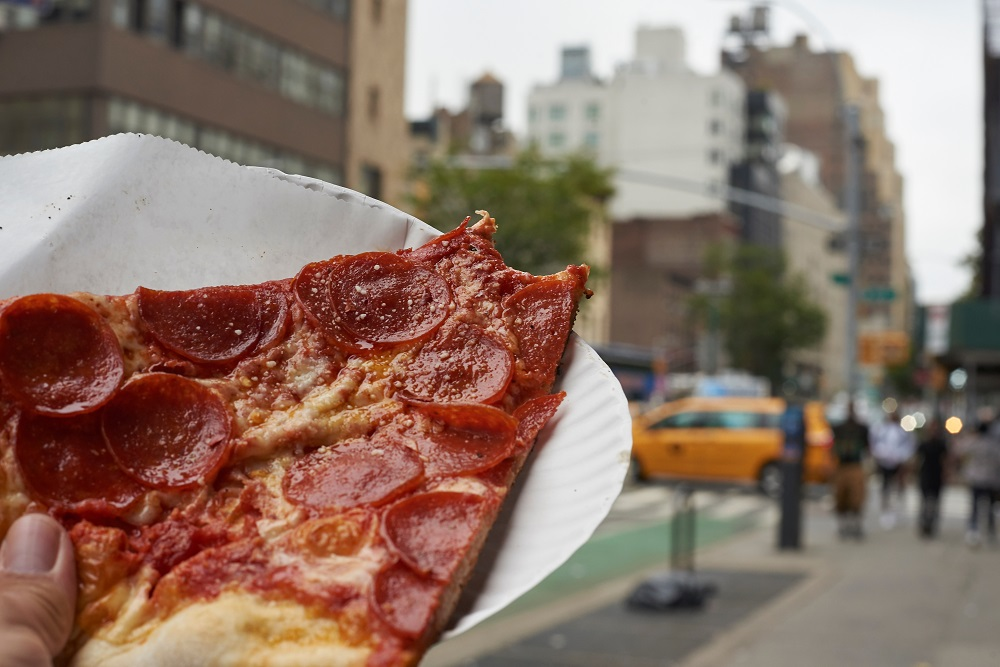
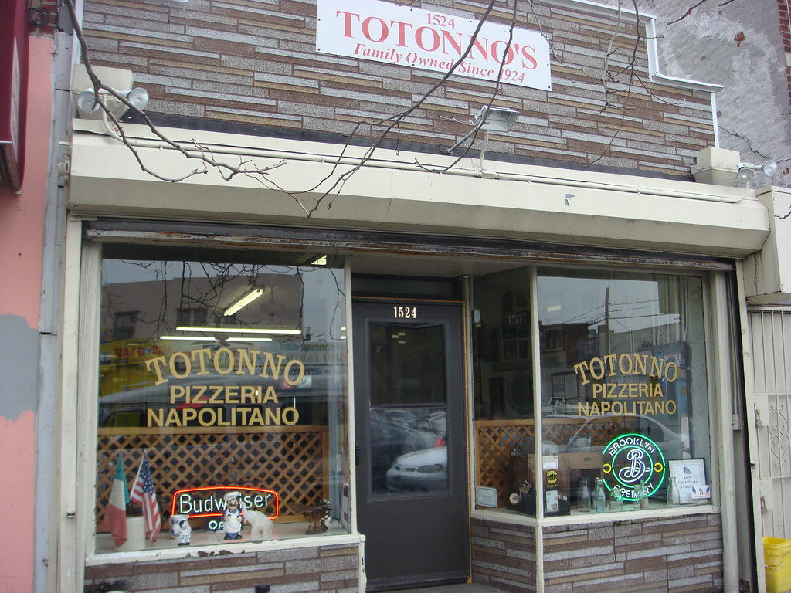

From Italian Roots to the East Coast

Papa's Tomato Pies
Since 1912
Papa’s Tomato Pies is the oldest family owned and continually run pizzeria in the U.S.A. It was established in 1912. First located on Butler Street in Trenton in 1912 and then moved to 802 Chambers Street in 1945 donating the original location to become the Neopolitan Hall . We moved to our present location in August of 2013. Papa’s is a New Jersey institution , loved locally and known to pizza lovers everywhere.I am lucky enough to be an Azzaro and have grown up with this historical pizza my entire life! My father Mike Azzaro is the current Manager at Papa's.

O'Scugnizzo
Since 1914
O'Scugnizzo Pizzeria was founded in 1914 by Eugeno Burlino. He only sold tomato pie (a pizza without mozzarella cheese) and they only cost a nickel. He was then succeeded by his son, Angelo "Chops" Burline, who made O'Scugnizzo what it is today. O'Scugnizzo is still in business in the beautiful city of Utica and is now run by his son Steven Burline.

Totonno's
Since 1924
Totonno’s Pizzeria Napolitana in Coney Island, pizzas have been made in the same way in the same spot since 1924. Anthony (Totonno) Pero, grandfather to Louise Ciminieri, Frank Balzano, Antoinette (Annette) Balzano, and great grandfather to Lawrence Ciminieri, immigrated from Naples and began making pizzas for Lombardi’s grocery store on Spring Street in Manhattan.

Frank Pepe's
Since 1925
A lot has happened since Frank Pepe starting baking “ah-beets” nearly 100 years ago. Pizza has gone from an obscure ethnic dish to become a mainstay of the American dining scene. But what hasn’t changed at Pepe’s is the family’s commitment to the tradition of food quality and commitment to the community at large that Frank Pepe envisioned in 1925.